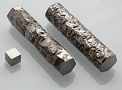

Название, символ, номер Цирко́ний / Zirconium (Zr), 40
Атомная масса
(молярная масса) 91,224(2) а. е. м. (г/моль)
Электронная конфигурация [Kr] 4d2 5s2
Радиус атома 160 пм
Химические свойства
Ковалентный радиус 145 пм
Радиус иона (+4e) 79 пм
Электроотрицательность 1,33 (шкала Полинга)
Электродный потенциал 0
Степени окисления 0, +1, +2, +3, +4
Энергия ионизации
(первый электрон) 659,7 (6,84) кДж/моль (эВ)
Термодинамические свойства простого вещества
Плотность (при н. у.) 6,506 г/см³
Температура плавления 2125 K
Температура кипения 4650 K
Уд. теплота плавления 19,2 кДж/моль
Уд. теплота испарения 567 кДж/моль
Молярная теплоёмкость 25,3 Дж/(K·моль)
Молярный объём 14,1 см³/моль
Кристаллическая решётка простого вещества
Структура решётки гексагональная
Параметры решётки a = 3,231, c = 5,148 Å
Отношение c/a 1,593
Температура Дебая 291 K
Прочие характеристики
Теплопроводность (300 K) 22,7 Вт/(м·К)